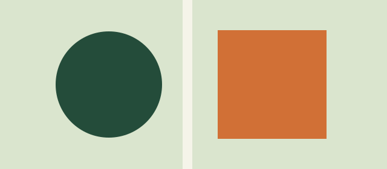

A small collection for observing space, type and rhythm across screen sizes.

A consistent outer margin keeps every block connected to the page.
The same words reveal changes in line length and wrapping.
Three columns become one when the reading space gets narrow.